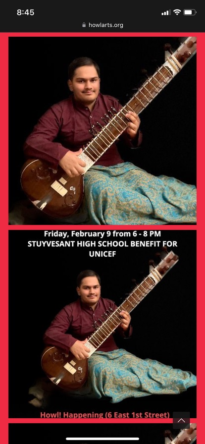

As mentioned, I have been learning sitar for the past 9 years. Over this course, I have performed various times and various different things. My first few performances were at my elementary and middle school's annual talent show(s). Since then, I have played sitar with the guitar with one of my friends at NYU Youth Music Festival. I have played at AMEX's Asian Network Diwali performance, as well as a fundraiser for India during COVID with the same organization. I have, most recently, performed with the Stuyvesant Beginner Band during our Spring 2023 concert. I am excited to play even more in the future, to promote Indian culture, and to promote peace and harmony throughout the world.
Above are links to some of my recent performances on the sitar. I am lucky to have found two friends who play the tabla, so that they could accompany me. I am proud of my performances, including the "jam" that I had with the guitar and band. I enjoyed how we were able to combine the "Western" and Eastern/Indian cultures into a beautiful harmony. I am also proud of raising the money for UNICEF, and for the relief efforts towards India during the COVID-19 pandemic. This made me feel good as I knew that my work could benefit those who need(ed) it most. This history might be short, but as I grow up, I would like to continue learning the sitar and performing for others to enjoy and, as mentioned, to promote culture and peace.